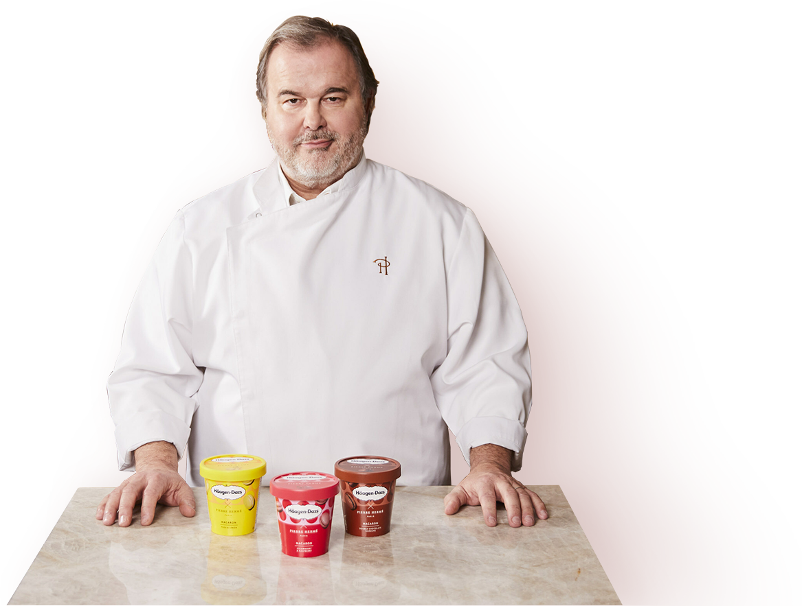
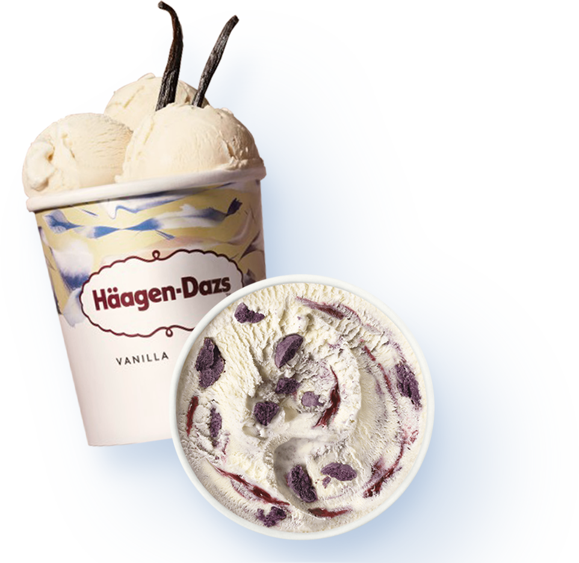
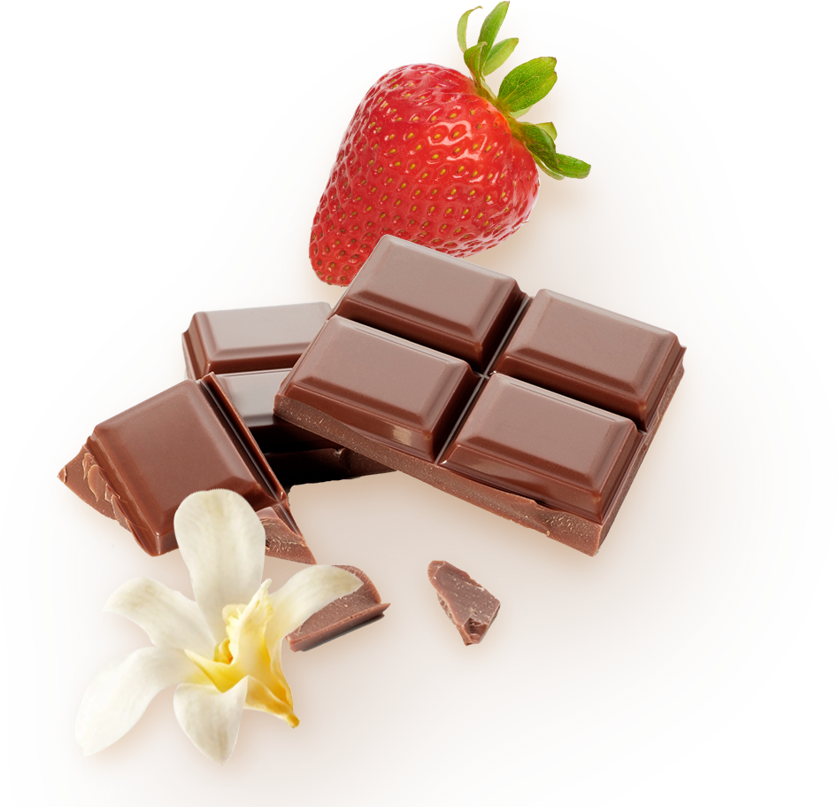

하겐다즈 브랜드 스토리

변하지 않는 장인정신
1961년부터 시작된
프리미엄 아이스크림 하겐다즈
하겐다즈의 엄격한 원칙을 바탕으로
만든 아이스크림, 그 시작과 끝은
고품질의 원료와 60년 넘게 이어져
온 철저한 장인정신입니다.

최상의 퀄리티
세계 최고의 아이스크림만을 생각하며
하겐다즈는 주저하지 않고 도전해왔습니다.
남들과 다른 하겐다즈만의 타협하지 않는
퀄리티, 그 시작과 끝은 고품질의 원료와
철저한 장인정신입니다.

특별한 원료
하겐다즈의 특별한 퀄리티는 무엇을
넣는 것에서 오는 것이 아닌 덜어내는
것에서부터 옵니다.
가장 최소한의 원료만을 사용
하며, 합성 색소 및 합성 향료 없이 천연
재료로만 최상의 맛을 만들기 위한
노력을 해왔습니다.